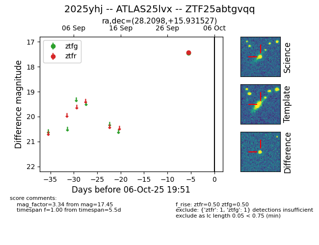

FINK: ZTF25abtgvqq
Lasair: ZTF25abtgvqq
ALeRCE: ZTF25abtgvqq
TNS: 2025yhj
YSE: 2025yhj
ZTF25abtgvqq (ztf,fink)
2025yhj (tns,yse)
ATLAS25lvx (atlas)
equatorial (ra, dec) = (28.2098,+15.93153)
galactic (l, b) = (143.8173,-44.43592)

last ztfg=17.45, ztfr=17.43
1 ztfg, 1 ztfr detections